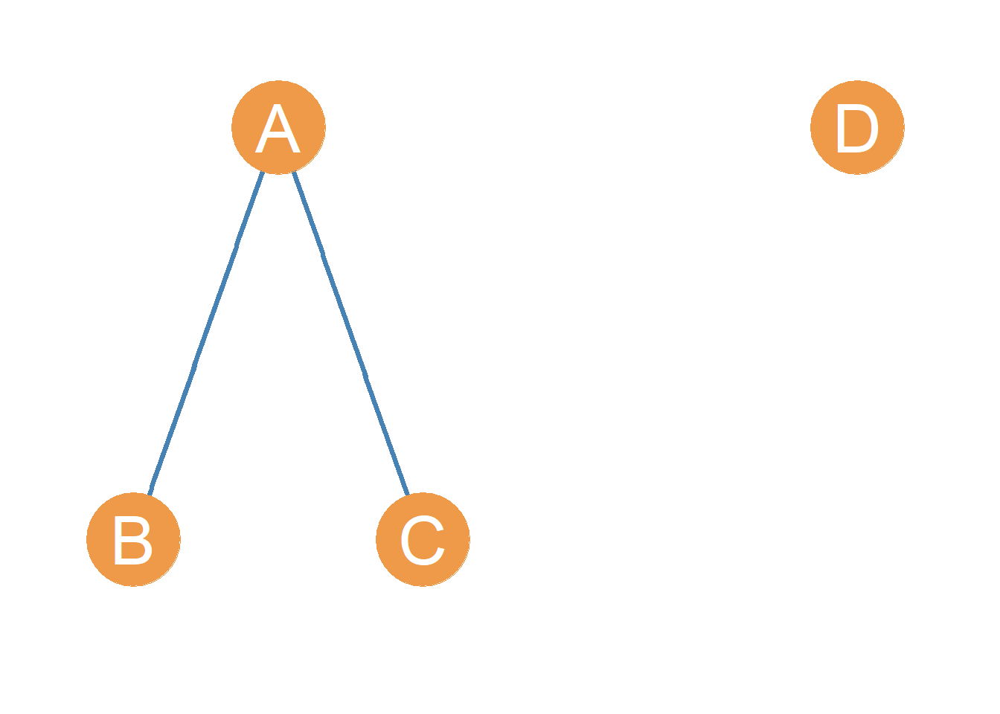
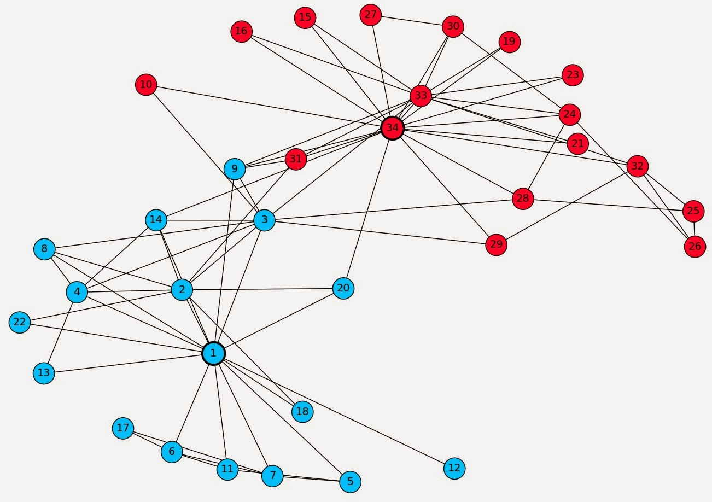
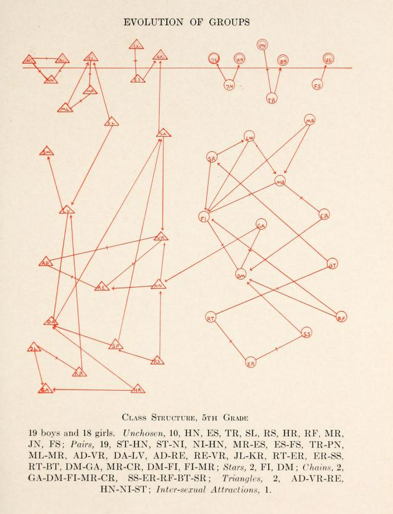

2 Graph Theory
2.1 From Ties to Graphs
This is likely not your first sociology course. But even if it is, relationships are relatively intuitive for people. They are all around us: you and your parents, you and your siblings, your siblings and your parents, you and your classmates, your classmates to each other. Affiliation, communication, friendship, hatred: these are the content of social relationships. Two people either have a relationship of some kind, or they do not. Essentially, a relationship is a connection between at least two social actors. We will see that sometimes, when relations clump together into networks, two sets of relations can have different content, but still share the same form (e.g., arrangement, or pattern).
The technical social networks term for “relations clumping together into networks” is concatenation (Martin 2009). For instance, every time you introduce two previously unrelated acquaintances to one another, you concatenate two previous disconnected ties into a connected triple.
2.3 Network Boundaries
Once you have a type of social relationship you would like to examine, the next step is to bound the context. If you want to map out all the social relationships in the world, well that’s impossible. Imagine how difficult it would be to map out all the people at your school who are friends with one another. That might be feasible if you have only 1,000 undergraduates, but at a school of 30,000, it would be a nightmare. That is in part why it is so important to bound the social context. The other is to exclude relationships that are not meaningful for your study. Bounding, or to draw boundaries, is to have a rule about what will or will not be included in the study (Laumann, Marsden, and Prensky 1989).

For example, if you are interested in who is friends with who in your social networks class, you have bound your study to look at only people who are in your social networks class. One of the most famous social network studies was performed by the anthropologist Wayne W. Zachary (see Figure 2.2 at a college karate club in the 1970s (Zachary 1977). Thus, the 34 members of the karate club and the outside teacher were the actors included in the study because they were the people who were involved in the day to day operations of the karate club at the time data were collected.
With a type of social relationship in some bounded context, you can begin to map the social world as a graph. In its most basic form, a graph is essentially a picture of the relationships between different types of social actors. This picture becomes incredibly powerful when we begin to use mathematical concepts to understand how actors relate to each other (mostly what this book is concerned with) or upon what social principles the network may have been formed.
While this class will mostly use the terms node and edge when referring to graphs, these are not the only terms in use among those who use network analysis techniques. Additional names for nodes include, vertex or point. Relationships between two nodes are, in addition to being called edges, are referred to as ties or links. Table Table 14.9 shows the different network lingo people use across disciplines.
| Academic Origin | Social Actor | Relationship |
|---|---|---|
| Graph Theory | Point | Line |
| Network Science | Vertex | Edge |
| Sociology | Actor | Tie |
| Computer Science | Node | Link |
2.4 The Building Blocks of Graphs: Edges and Nodes
There is a mathematical definition of a graph which is slightly more technical. A graph is a set, usually represented by the capital letter G.
From high school math, you may remember that the mathematical definition of a set is simply a collection of entities, some of which may be ordered and some of which may themselves be other sets (a set can have sets as its members). In the case of graphs, the entities inside the collection are a set of vertices (also called nodes) and a separate set of edges (also called links).
A graph is thus a set containing two sets as its members: a set of nodes (usually represented by the capital letter V) and a set of edges (usually represented by the capital letter E).
In set theory notation:
\[ G = \{V, E\} \tag{2.1}\]
Which says that the members of the set defined by the graph, which we call G, are two other sets, called E and V (who themselves have a series of members inside). The usual notation, like in Equation 2.1, is to enclose the members of a set in brackets \(\{\}\).
2.4.1 Nodes
The set of nodes usually represents actors in the real world social network. Point and line diagrams (such as the ones shown in Figure 2.2) are used to represent graphs, these in their turn represent the real social network.
In these diagrams nodes (representing actors) are usually drawn as a circle, but they could be any shape or symbol. In social network analysis, actors are often either an individual or an organization, but, as we have seen, in wider applications of the network imagery in the physical and biological sciences (usually going under the banner of network science), nodes can represent anything that links up to other similar entities in a larger system. These include power generation stations and homes, servers and computers, animals in an ecosystem, towns, really anything of substance that we can define some kind of relation on, or from which some type of content can be said to be exchanged.
2.4.2 Edges
Edges represent the presence of a connection or a social tie between two nodes. As we will see this can be a permanent relationship (e.g., “brother of”) or a more fleeting interaction (e.g., a text message, being in the same place at the same time). We will define what social ties are, how many types exist, and what their properties are, in lecture. For now, we can say that in social network analysis, connections are relationships, or links between nodes, and edges in a graph are meant to represent these connections.
In graph theory, the set of edges is best thought of as a collection of pairs of nodes, where the two members of the pair are the nodes involved in the social tie. So if node A is linked to node B via some social tie (friendship, study group, coworkers), then AB is a member of the edge set of the relevant graph. In set theory notation, this is usually written as \(AB \in E\) which is read as “the edge AB is a member of the set \(E\).” Edges can also be referred to by juxtaposing the two nodes that are connected by the edge. Thus, the edge AB can also be written as \(V_A V_B\).
In the case of power generation stations and homes, the edges can represent power lines. Meanwhile, servers and computers are connected by internet cables and wi-fi access, while towns are connected by roads. The existence of edges signal the potential for content to flow, whether that’s power, computer data, or people in cars. In the case of social networks, the content that flows between two nodes are such things as influence, advice, information, and support. But it may also be disease, bullying, or gossip.
2.5 Simple Graphs
Figure 2.3 shows an example of a point and line network diagram of a graph with four nodes and two edges. Nodes A, B, C and D are circles representing actors A, B, C and D, whose real world social relationships we are interested in studying. The lines drawn between A and B and likewise between B and C represent the edges, indicating the presence of a social tie. Thus the edges, AB and BC appear in the network diagram. The lack of an edge between nodes B and C reflects the absence of a relationship between actors named B and C in the real world.
So if we were to write out the graph shown in Figure 2.3 in terms of the sets that define the graph, we would say:
\[ G = \{E, V\} \tag{2.2}\]
\[ E = \{AB, AC\} \tag{2.3}\]
\[ V = \{A, B, C, D\} \tag{2.4}\]
This says that the graph G shown in Figure 2.3 is a set with two members, E and V, each of which is its own set. The edge set of G has two members, AB and AC. The node set of G has four members, A, B, C, and D.
Graphs have some basic properties that we need to learn about:
- In a graph, if two nodes are joined together by an edge, they are said be adjacent. So in Figure 2.3, nodes A and B are adjacent, as are nodes A and C. Pairs of nodes that are not linked by an edge, like nodes B and C, are said be nonadjacent.
- The nodes at the two ends of each existing edge are said to be the end vertices of that edge. Each edge has two end vertices. As we have been doing, edges are named by typing together the names of their two end vertices. So the edge that has nodes A and B as its endpoints is called AB.
- If an edge “touches” a node (e.g., connects it to another node) we say that that edge is incident on that node. So in Figure 2.3, the edge AB is incident on both nodes A and B. The relation of incidence will be important in a later lesson when we discuss network metrics computed at the node level like degree centrality.
- Finally, in a graph, nodes that are not connected to any other nodes are called isolates. This means that in Figure 2.3, node D is an isolate because it has zero edges incident upon it.
Graphs like that shown in Figure 2.3 are called simple graphs. There are two requirements for a graph to count as a simple graph:
- First, there can only be one edge joining two nodes at any time. That is, there cannot be multiple lines linking together the same pair of nodes. We will see in a later lesson that there are types of graphs that relax this restriction.
- The second requirement is that graph does not contain any edges that have the same node as its two end points. These kind of edges are called loops, and they are edges that connect a node to itself! Clearly this does not make sense for most sociological applications.
With some exceptions, noted in subsequent lessons, simple graphs can represent most social networks.
References
Laumann, Edward O, Peter V Marsden, and David Prensky. 1989. “The Boundary Specification Problem in Network Analysis.” In Research Methods in Social Network Analysis, edited by Linton C. Freeman, Douglas R. White, and Antone Kimball Romney, 61–79. New Brunswick: Transaction Publishers.
Martin, John Levi. 2009. Social Structures. Princeton University Press.
Zachary, Wayne W. 1977. “An Information Flow Model for Conflict and Fission in Small Groups.” Journal of Anthropological Research 33 (4): 452–73.
2.2 Social Ties
For example, you are likely enrolled in a social network’s class if you are reading this, and have people you know such as your friends and people you’ve taken prior classes with, but also people you’ve never seen before. It might be obvious that you have a relationship with those people that you know, but do you have a relationship with those you do not know?

The answer is maybe. It depends on how you define the term social relationship. If you were asked who your friends are, you would tell me that some of your classmates are your friends, and the rest of your classmates are not your friends. If you were asked which of these people in your classroom are your classmates however, everyone would be your classmate, except for your professor or teaching assistants. You share a particular type of relationship with these other people, your classmates, even if you’ve never met them. The word “classmate” even implies a relationship type, one with a different social meaning than “friend.” When analyzing a social network, it is important to first understand what type of social relationship you are analyzing, as it relates directly to what type of conclusions or generalizations you can make about the social world.